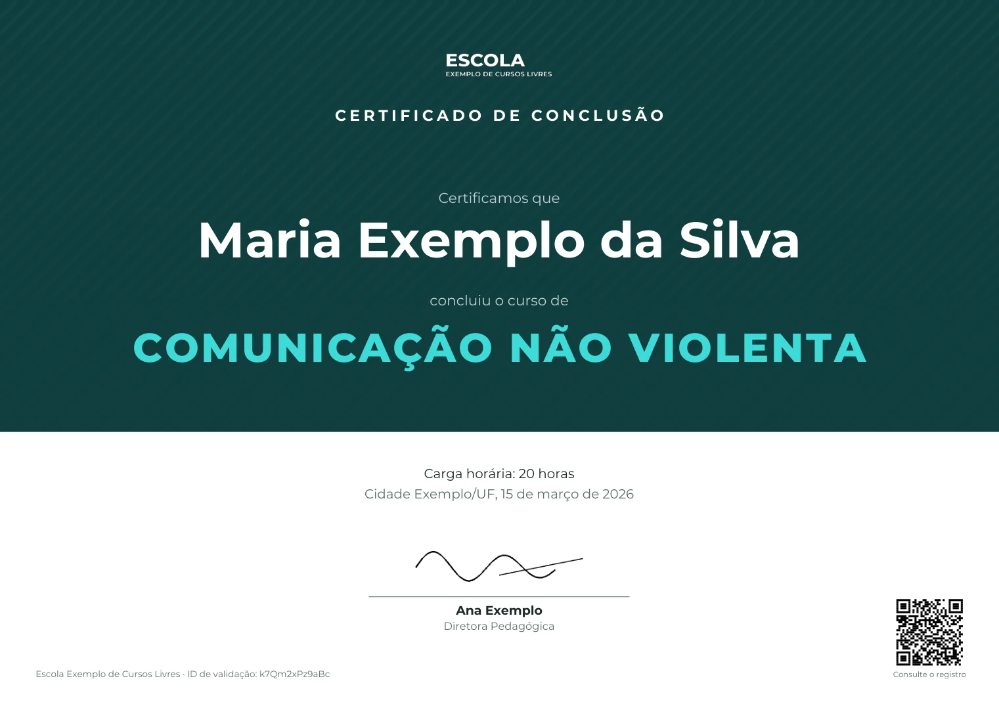
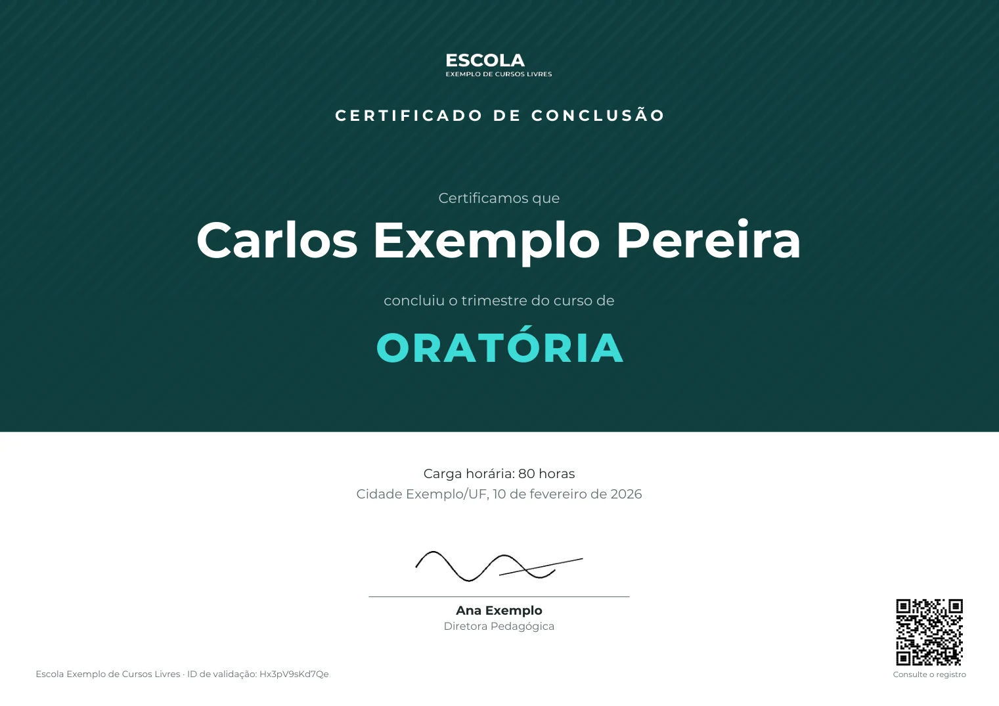

Uma linha da planilha vira documento. O QR diz se ele ainda vale.
Certificados e declarações emitidos a partir de um registro, com uma página pública de validação. Abaixo, o sistema funcionando: escolha uma linha, gere o PDF, revogue e confira.
Escola Exemplo de Cursos Livres, alunos, cursos e IDs são fictícios. Os PDFs e os QR codes foram gerados pelo código do projeto; a planilha, a emissão e a validação são reproduções, sem servidor.
- ✓ID k7Qm2xPz9aBc: 12 letras ou dígitos, numa linha só
- ✓status: ativo
- ✓URL de validação: configurada, vai no QR
- ✓campos obrigatórios: nome, curso, carga_horaria e o conteúdo do curso
- ●PDF gerado: agora, a partir da linha; nada fica guardado

✓ Documento válido
- Documento
- Certificado de conclusão de curso
- Nome
- Maria Exemplo da Silva
- Curso
- Comunicação Não Violenta
- Carga horária
- 20 horas
- Emissão
- 15 de março de 2026
Desativado na demo. No sistema, abre o formulário de certificação do LinkedIn já preenchido.
- Formato do ID12 letras ou dígitos
- Linha na planilhauma linha com este ID
- Statusativo
- Respostatipo, nome, curso, carga horária, data
A emissão reproduz a versão n8n, onde revogar é um botão. No Python, revoga-se pela planilha; a validação pode levar até 30 s para refletir a alteração por causa do cache.
Por dentro
Uma linha, um ID, uma consulta.
Não há banco próprio. A planilha é o registro: quem emite mantém as linhas, a emissão e a validação leem a mesma linha.
- 01RegistroUma linha por documento: tipo, nome, curso, carga horária, data e
status. Nas declarações, também CPF, RG e endereço. - 02DocumentoA emissão, restrita a quem emite, gera o PDF da linha na hora, só se o documento estiver ativo. Nenhum PDF é guardado.
- 03ID e QRUm ID aleatório de 12 letras ou dígitos. O QR leva à consulta pública desse ID, num endereço que vem da configuração.
- 04ConsultaConfere o formato do ID antes de ler a planilha, exige uma linha só com ele e lê o
status. Sóativovale. - 05RespostaTipo, nome, curso, carga horária e data. Nada além disso.
Uma especificação, duas implementações
Primeiro o contrato. Depois, onde ele roda.
Uma especificação define as colunas, os tipos de documento, o formato do ID, os campos públicos, a revogação e o link do LinkedIn. Python e n8n são duas implementações desse contrato, não dois produtos. O custo também é explícito: toda regra nova entra na especificação e nas duas.
- docs/especificacao.mdEspecificação
Dados, regras, estados e o que a validação pode mostrar. A fonte comum das duas versões.
- python/Python, a referência
Onde dá para hospedar um contêiner. Serviço Flask com o PDF desenhado em código.
Flask · ReportLab · gspread · Docker · 156 testes automatizados - n8n/n8n, as mesmas regras
Onde não dá para hospedar Python, onde a política do Google Workspace bloqueia chaves de conta de serviço, ou onde a equipe já opera n8n. Ajustável no editor visual.
n8n · Google Sheets · Google Slides · validação manual dos fluxos
O que é público
Quem confere vê só o que precisa ver.
Na resposta pública
tipo_documentoDocumentonomeNomecursoCursocarga_horariaCarga horáriadata_emissaoEmissãostatus✓ válido ou ✗ não é mais válido
De um documento revogado, só o tipo e o nome abreviado: “Maria S.”.
Fora da resposta
cpfsó na emissãorgsó na emissãoenderecosó na emissãodia_aulasó na emissãorevogado_emsó na emissãorevogado_porsó na emissãomotivo_revogacaosó na emissão
O PDF das declarações, que leva CPF, RG e endereço, nunca é servido pela página pública. Na demo, a declaração de João mostra isso: os dados estão na planilha e no PDF, e a validação responde sem eles.
A consulta confirma que o emissor tem um documento com aquele ID, esses dados e esse status. Ela não prova que o PDF em mãos não foi alterado: não há assinatura digital nem hash, quem confere compara a página com o documento, e a confiança depende de a página aberta ser do domínio do emissor.
Revogação
Revogar não apaga.

- O ID continua na planilha. Muda só o
status. - A consulta passa a responder “Este documento não é mais válido”, com o tipo e o nome abreviado, para quem confere saber que digitou o código certo.
- No n8n, o botão Revogar pede o motivo e uma confirmação e grava
revogado_em,revogado_poremotivo_revogacao, que nunca aparecem na consulta. No Python, revoga-se mudando ostatusna planilha; a consulta reflete em até 30 s, pelo cache. Desfazer, só pela planilha. - Documento revogado não gera PDF de novo. A cópia que já circulou continua existindo; é a consulta que diz que ela não vale mais.
Detalhes técnicos
- Tipos de documento
- 5 tipos de documento, todos com ID, QR e validação: certificado de conclusão de curso (com a página de conteúdo programático), de semestre (com essa página a pedido) e de trimestre; declaração de matrícula e de término de semestre. A demo usa três.
- ID
- 12 letras ou dígitos, aleatório (~71 bits), sem
-ou_, porque na planilha um valor começando com-vira fórmula. ID repetido não valida nenhuma linha. É um identificador difícil de adivinhar, não uma prova de autenticidade. - PDF e QR
- Python: desenhado em código com ReportLab, fonte reduzida para nomes longos, QR pelo gerador do próprio ReportLab. n8n: modelo no Google Slides preenchido pelo fluxo, QR desenhado no próprio fluxo. Nenhum serviço externo vê os IDs.
- URL de validação
- Vem da configuração, nunca da requisição. Sem ela configurada, a emissão falha em vez de gerar documento sem QR.
- Planilha e cache
- Google Sheets, colunas em texto simples. Cada leitura custa chamadas à API do Google, com cota baixa: a rota pública da versão Python guarda a planilha em cache por 30 s. O n8n lê a cada consulta.
- Limite de consultas
- Python: 10 por minuto por IP, em memória de um processo. n8n: contador aproximado nos dados do fluxo.
- Acesso
- Emissão com senha e bloqueio temporário (Python) ou login com a conta Google, só para e-mails ou domínios autorizados (n8n). Acesso ao Google sem chave persistente: a política do Workspace foi mantida, não desativada.
- Certificados válidos ganham um botão que abre o formulário de certificação do LinkedIn já preenchido. Declarações e revogados, não.
- Testes
- 156 testes automatizados na versão Python (pytest), incluindo o fluxo registro → PDF → QR → página. Na versão n8n, validação manual dos fluxos, de ponta a ponta num navegador.
- Fora do escopo
- Assinatura digital ou hash do PDF, guarda dos documentos emitidos, histórico próprio de emissão e limite de consultas entre várias instâncias.
Python · Flask · ReportLab · gspread · pytest · Docker · n8n · Google Sheets · Google Slides · Google OAuth
Sobre o projeto
Implementação técnica de um projeto real, feito para uma escola que não é identificada. Conduzi o projeto de ponta a ponta: levantei os requisitos, especifiquei e projetei a solução, defini os fluxos e as regras de negócio, conduzi as duas implementações, testei e validei o resultado. Claude e outras ferramentas de IA foram usadas como apoio no desenvolvimento. Não é um produto nem um serviço oferecido.